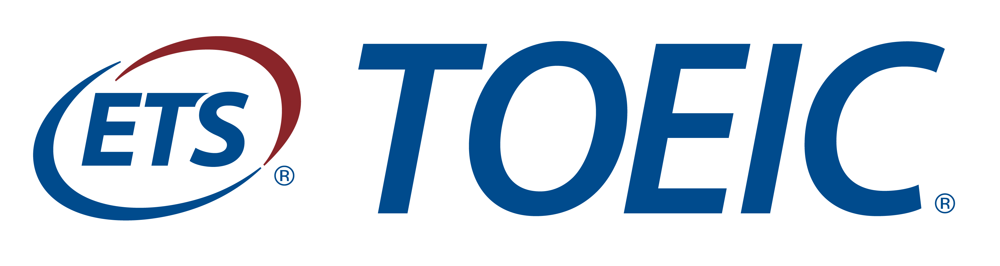

- 정의: 소프트웨어 개발 관련 자격증으로, 정보시스템의 생명주기 전반에 걸친 프로젝트 업무를 수행하는 직무로서 계획수립, 분석, 설계, 구현, 시험, 운영, 유지보수 등의 업무를 수행할 수 있는 능력을 검정하는 시험이다.
접수처(큐넷)- 접수기간: 2020.07.28(화) ~ 2020.07.31(금)
- 시험날짜: 2020.08.22(토)

- 정의: 외국인의 영어 능력을 측정하기 위하여 미국의 교육 기관에서 개발한 영어 능력 시험. 일상생활이나 비즈니스에 중점을 두고 있다.
접수처(YBM 어학시험)- 접수기간: ~ 2020.07.27(월) 오전 8시
- 시험날짜: 2020.08.09(일) 09:20